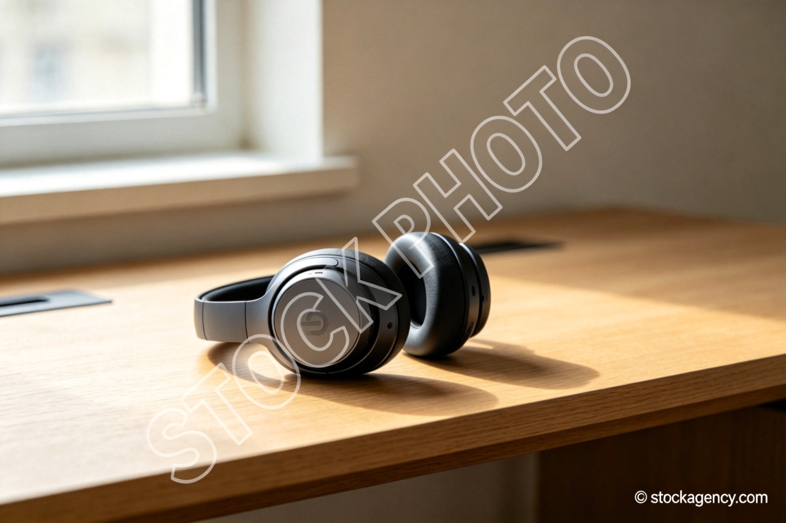
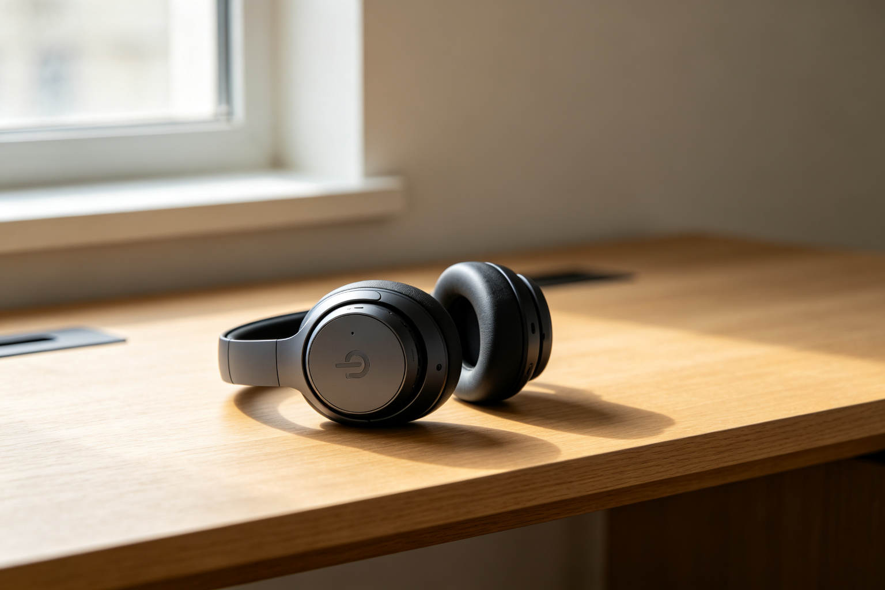

Text Remover — Remove Text from Image, Photos & Screenshots
Remove text, captions, watermarks, and date stamps from any image in seconds — PixPurge is a text remover that can remove text from photos, screenshots, and scans. Sign in to start — every new account gets 10 free credits. Upload a photo and our AI detects every text region automatically, erases it, and rebuilds the background — you get a clean image ready to download.


The slider sweeps on its own — or drag it to compare manually.
Select Model
Output Quality
or drop a file here
Supports JPG, PNG, WebP, HEIC • Max 10MB • Sign in to start — 10 free credits on sign-up
No image? Try one of these:
By uploading an image you agree to our Privacy Policy and Terms of Use.
3 per image